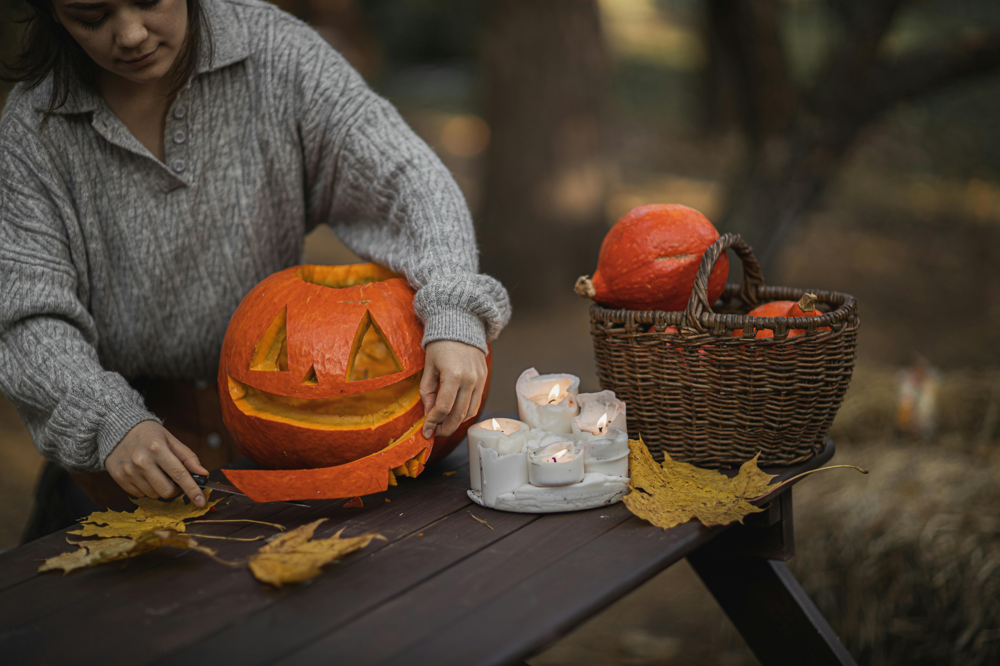

 Halloween is celebrated on October 31st, is a holiday rich in history and tradition. Its origins can be traced back to the ancient Celtic festival of Samhain, a time when people would light bonfires and wear costumes to ward off ghosts. The Celts believed that on the night before their new year, the boundary between the living and the dead became blurred, allowing spirits to roam the earth. As Christianity spread, the holiday evolved, incorporating elements of All Saints' Day, which was established by the church to honor saints and martyrs. This blend of traditions eventually led to the modern Halloween, a time for community gatherings, festive costumes, and playful activities.
In contemporary times, Halloween is celebrated with a variety of customs that vary by region. In the United States, it is particularly popular, with children and adults alike dressing up in costumes ranging from spooky to whimsical. Trick-or-treating is a beloved activity where children go door-to-door collecting candy from neighbors. Many people also enjoy decorating their homes with carved pumpkins, known as jack-o'-lanterns, and hosting themed parties. Haunted houses, corn mazes, and horror movie marathons are other popular ways to embrace the eerie spirit of the holiday. Halloween has also become a significant cultural event, influencing fashion, entertainment, and even food, with pumpkin-flavored treats becoming a seasonal favorite.